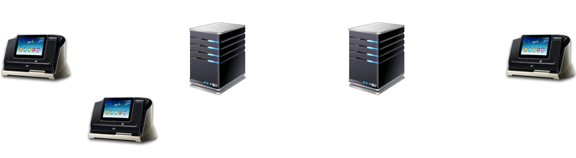

什么是纸纹®？
纸纹®是纸张自然纤维独特的纹理分布，是上帝（自然）赐予每张纸独一无二的DNA，它是自然形成而非人为制造的，因而人类无法复制或克隆纸纹®。
纸纹®，由于其随机性、唯一性、稳定性和无法复制的特点，可广泛应用于票据、商品等防伪领域。
兆日科技历经10余年研发，革命性地解决了纸张自然纤维纹理特征的提取和特征模型的算法构造难题，成功发明了世界领先的纸纹®特征识别技术，并不断推出基于纸纹技术的防伪产品。它们可广泛适用于票据防伪，商品防伪等领域。
纸纹®是纸张自然纤维独特的纹理分布，是上帝（自然）赐予每张纸独一无二的DNA，它是自然形成而非人为制造的，因而人类无法复制或克隆纸纹®。
纸纹®，由于其随机性、唯一性、稳定性和无法复制的特点，可广泛应用于票据、商品等防伪领域。
随机、唯一、稳定和无法复制。纸张纤维来自于广袤的大自然，纤维形态细微、多样，纤维在纸张中随机地纵横交织在三维空间中，而形成独特的、不受人为控制的纤维分布结构。纸纹®，如同人类的指纹、虹膜、视网膜等，独一无二，永不改变，同属特征识别技术。
本世纪初，兆日科技申请了第一个关于纸张纹理特征识别的发明专利，并在今后十余年里相继获得此类技术的20余项专利；2011年，兆日成功研发出全球首款纸张自然纹理传感器，继而又成功建立了一整套纸纹®的物理特征模型、数学模型和特征识别技术，并将该项技术正式命名为纸纹®（PaperPrint®）。
人类迄今已发明了众多防伪技术，它们几乎都是利用某种人造的复杂特征来阻吓伪造，例如在被保护物上印刷复杂的图案（如各种条码、激光全息）、使用具有特殊光学特性的油墨（如红外隐形油墨）、附着芯片等，但过去几十年的防伪实践清楚地表明，这些技术收效甚微，且大都被伪造者攻破，伪造商品日益泛滥。之所以这些传统的防伪技术收效甚微，是因为它们都是利用了某些人为制造的材料或特征物来防伪，而从理论和实践上来看，只要是人为制造的东西，你能够制造的东西别人就一定可以仿制。伪造的本质就是仿制或克隆......了解更多 >>
人类迄今已发明了众多防伪技术，它们几乎都是利用某种人造的复杂特征来阻吓伪造，例如在被保护物上印刷复杂的图案（如各种条码、激光全息）、使用具有特殊光学特性的油墨（如红外隐形油墨）、附着芯片等，但过去几十年的防伪实践清楚地表明，这些技术收效甚微，且大都被伪造者攻破，伪造商品日益泛滥。之所以这些传统的防伪技术收效甚微，是因为它们都是利用了某些人为制造的材料或特征物来防伪，而从理论和实践上来看，只要是人为制造的东西，你能够制造的东西别人就一定可以仿制。伪造的本质就是仿制或克隆。
与任何人为制造的材料或特征物不同，纸纹®是自然形成而非人为的，它具有随机、唯一和稳定性，更重要的是纸纹®的三维复杂分布结构使得它具有不可复制性，这样纸纹®技术从理论和实践上杜绝了复制的可能性，使其成为无法被彻底攻破的防伪技术。 纸纹®防伪技术无需在被保护物上印刷任何内容，也无需在被保护物上附着、添加任何其他特殊物质，无需改变被保护物原有的形态，具有极高的经济性和广泛的适应性，它非常适合用于保护纸质票据、文件、艺术品以及商品的防伪证书和防伪标签。
纸纹®技术在金融票据防伪领域的一个应用产品，全球自动化程度最高、唯一可同时防范伪造、变造和克隆票据的防伪系统。
系统采用业界领先的云平台技术，实现物质特征数据云中心处理。所有终端接入互联网，支持点-点、点-中心、中
心-中心的网络结构，可适应金融机构集中开票/验票、分散开票/验票、集中+分散管理的多种运营模式。

票据纸纹®防伪系统的终端设备具有自动提取票据纸纹®特征和票面影像的功能，同时还具备自动鉴别纸纹®和票面要素完整性的功能。在联网环境下，它可将提取的纸纹®信息与票面影像信息自动上传数据中心或其他需要的网点终端，以方便其他网点或机构跨地区、跨行验证票据真伪；此外，终端设备还可以提供多光谱照射下的高清票据影像，辅助人工核查票据防伪印刷标记、荧光纤维、荧光油墨、金属线等。
票据纸纹®防伪系统，将引领传统票据防伪技术跨进基于物质特征识别技术的防伪新时代。
1）提升安全：基于物质特征识别技术，精准识别纸张独一无二的特征；智能化快速准确地检测出克隆票，伪造票和变造票，是目前最完整有效的票据防伪解决方案。
2）加强内控：通过对银行票据，例如本票、汇票、支票，以及存单等重空凭证的流转过程的全面管理增强内控，包括基于物质特征识别技术的空白票据管理和票据签发管理；基于全智能化识别和物联网技术的客户票据签收管理；采用互联网云中心数据处理的票据承兑管理。
3）提高效率、降低成本：银行票据往往具有信用高、金额巨大和见票即付的特点，传统票据验证往往对柜员提出了极高的技术要求和带来巨大工作压力；使用票据纸纹®防伪鉴别技术，可以极大地提高验票的自动化程度和降低对人员的技术要求，可以使原本高级、复杂的验票工作，从少数专家操作、集中式管理的传统模式转型成效率更高、服务更便捷的分散式网点模式，降低成本、提高效率和服务质量。